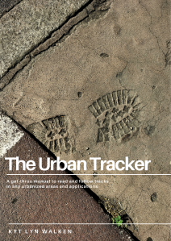
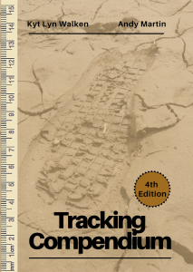

PFV: 2026
VERITAS TRACKING
Project.Future.Vision © by EGR Digital [all rights reserved]
Time spent in recce seldom goes wasted. This is the unrelenting pursuit of inexorable truth.
TACTICAL DASHBOARDFIND > ANALYSE > INTERPRET > EXPLOIT
TRACKERS TOOLS
The Tactical Dashboard is a web app that allows you to track and manage tactical operations. It is designed for use by small teams and individuals who need to manage their operations in real time.
: TACTICAL DASHBOARDTRACKERS SUPPORT DIFFERENT CAUSES
Are you the sort of person who wants to know the details? Do you want to know the truth and pursue it?
Trackers can help you find what you're looking for. Get in touch to discuss your needs.
: EmailTRACKING IS ART AND SCIENCE
Tracking is understanding the track and/or sign of a person or animal by finding, analysing, interpreting and exploiting evidence of their presence.
Learn more about tracking by exploring the growing reference materials with the button below.
: TRACKERS REFERENCE GUIDEFORENSIC MANTRACKING
Forensic mantracking is the application of tracking skills to the investigation of crimes. It is a specialised skill that requires a high level of expertise and experience.
WILDLIFE TRACKING
Wildlife tracking is the study of ecosystems through the use of tracking skills.
THE WAY OF TRACKING
Kyt Lyn Walken is the founder of THE WAY OF TRACKING, Hull's certified mantracking school in Europe. She is an authoritative voice on mantracking in Europe, including the UK, and offers courses and training via the official website.
For more information, visit her site using the button below.
: THE WAY OF TRACKINGOPERATIONAL TRACKING
This is a definitive source for operational tracking by Andy Martin and Kyt Lyn Walken.
THE URBAN TRACKER

This is a definitive source for urban tracking by Kyt Lyn Walken.
THE TRACKING COMPENDIUM

This is a definitive source for tracking by Kyt Lyn Walken and Andy Martin.